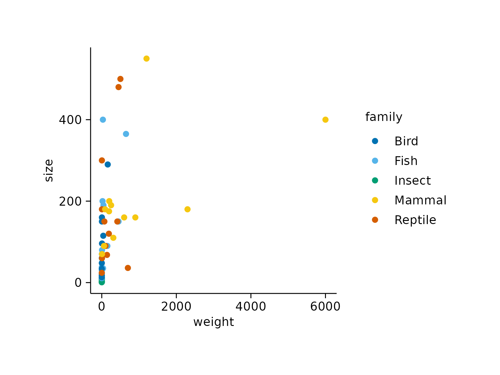
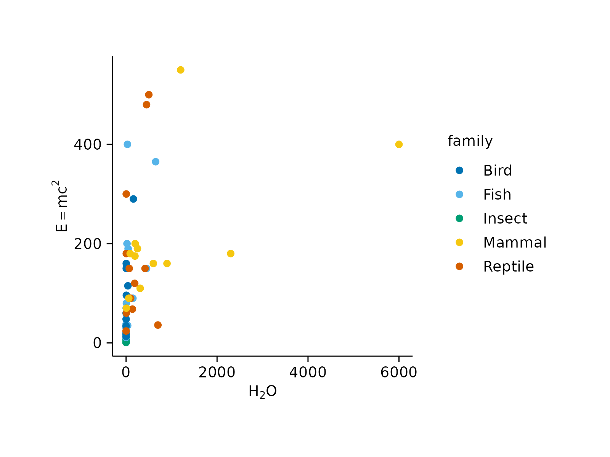
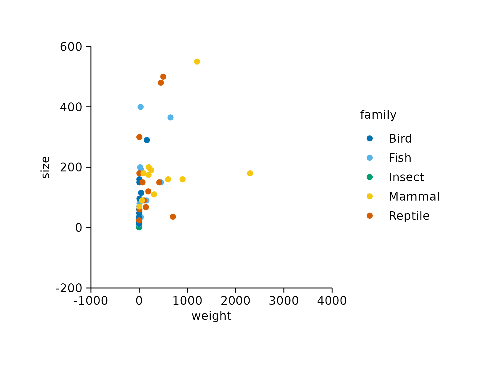
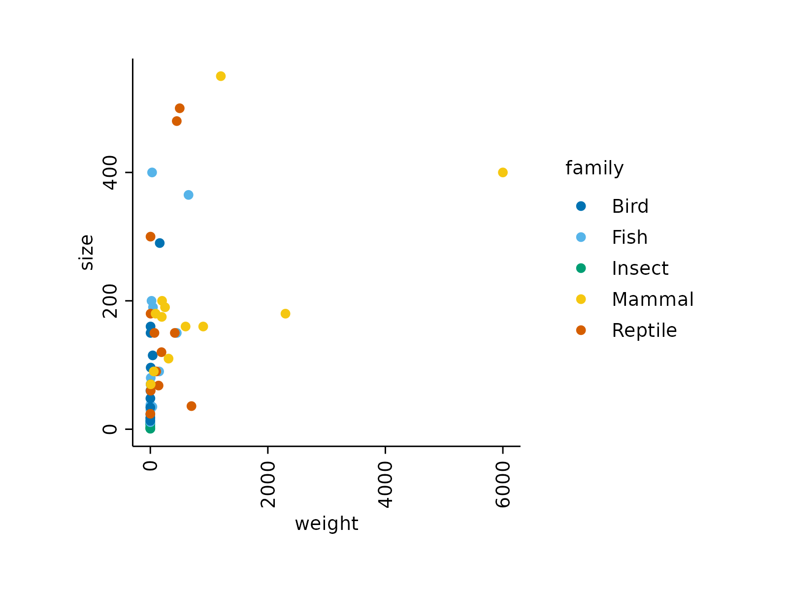
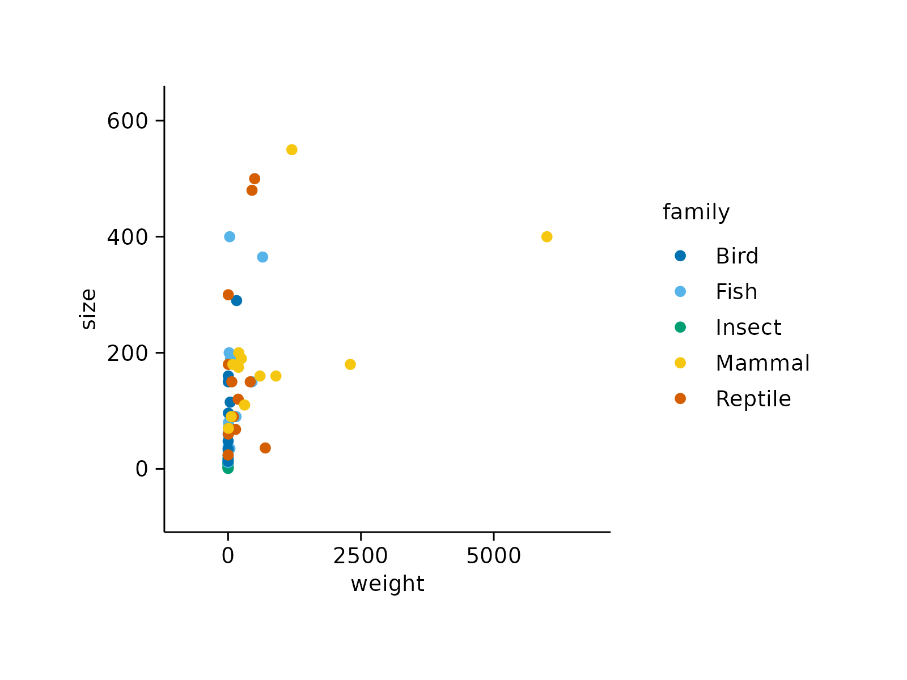
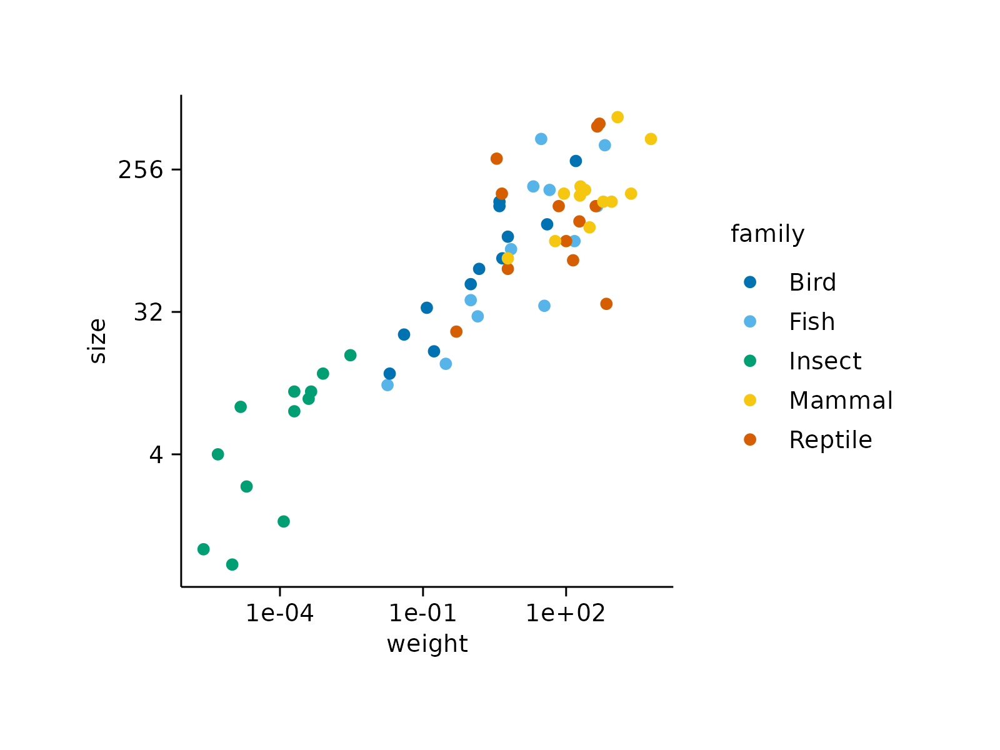

Adjust axes
Usage
adjust_x_axis(
plot,
title = ggplot2::waiver(),
breaks = ggplot2::waiver(),
labels = ggplot2::waiver(),
limits = NULL,
padding = c(NA, NA),
rotate_labels = FALSE,
transform = "identity",
cut_short_scale = FALSE,
force_continuous = FALSE,
...
)
adjust_y_axis(
plot,
title = ggplot2::waiver(),
breaks = ggplot2::waiver(),
labels = ggplot2::waiver(),
limits = NULL,
padding = c(NA, NA),
rotate_labels = FALSE,
transform = "identity",
cut_short_scale = FALSE,
force_continuous = FALSE,
...
)Arguments
- plot
A
tidyplotgenerated with the functiontidyplot().- title
Axis title.
- breaks
One of:
NULLfor no breakswaiver()for the default breaks computed by the transformation objectA numeric vector of positions
A function that takes the limits as input and returns breaks as output (e.g., a function returned by
scales::extended_breaks()). Note that for position scales, limits are provided after scale expansion. Also accepts rlang lambda function notation.
- labels
One of:
NULLfor no labelswaiver()for the default labels computed by the transformation objectA character vector giving labels (must be same length as
breaks)An expression vector (must be the same length as breaks). See ?plotmath for details.
A function that takes the breaks as input and returns labels as output. Also accepts rlang lambda function notation.
- limits
Axis limits. For example, with
limits = c(20, 90)the axis starts at 20 and ends at 90.- padding
Extra space between the data points and the axes. Defaults to
c(NA, NA), which does not change the padding.- rotate_labels
Whether to rotate axis labels. If
TRUEis set to 45 degrees. You can also provide custom degree values, for example,rotate_labels = 90. Defaults toFALSE.- transform
For continuous scales, the name of a transformation object or the object itself. Built-in transformations include "asn", "atanh", "boxcox", "date", "exp", "hms", "identity", "log", "log10", "log1p", "log2", "logit", "modulus", "probability", "probit", "pseudo_log", "reciprocal", "reverse", "sqrt" and "time".
A transformation object bundles together a transform, its inverse, and methods for generating breaks and labels. Transformation objects are defined in the scales package, and are called
transform_<name>. If transformations require arguments, you can call them from the scales package, e.g.scales::transform_boxcox(p = 2). You can create your own transformation withscales::new_transform().- cut_short_scale
Whether to shorten axis labels using
Kfor thousand,Mfor million, and so on. Defaults toFALSE.- force_continuous
Whether to force the axis to be continuous. Defaults to
FALSE.- ...
Arguments passed on to ggplot2
scalefunction.
Details
The
titleargument ofadjust_x_axis()andadjust_y_axis()supports plotmath expressions to include special characters. See examples and Advanced plotting.
Examples
# Plot without adjustments
animals %>%
tidyplot(x = weight, y = size, color = family) %>%
add_data_points()

# New titles
animals %>%
tidyplot(x = weight, y = size, color = family) %>%
add_data_points() %>%
adjust_x_axis(title = "My new x axis title") %>%
adjust_y_axis(title = "My new y axis title")
# New titles with plotmath expressions
animals %>%
tidyplot(x = weight, y = size, color = family) %>%
add_data_points() %>%
adjust_x_axis(title = "$H[2]*O$") %>%
adjust_y_axis(title = "$E==m*c^{2}$")

# Axes limits
animals %>%
tidyplot(x = weight, y = size, color = family) %>%
add_data_points() %>%
adjust_x_axis(limits = c(-1000, 4000)) %>%
adjust_y_axis(limits = c(-200, 600))

# Rotate labels
animals %>%
tidyplot(x = weight, y = size, color = family) %>%
add_data_points() %>%
adjust_x_axis(rotate_labels = 90) %>%
adjust_y_axis(rotate_labels = 90)

# Increase plot area padding
animals %>%
tidyplot(x = weight, y = size, color = family) %>%
add_data_points() %>%
adjust_x_axis(padding = c(0.2, 0.2)) %>%
adjust_y_axis(padding = c(0.2, 0.2))

# Scale transformation
animals %>%
tidyplot(x = weight, y = size, color = family) %>%
add_data_points() %>%
adjust_x_axis(transform = "log10") %>%
adjust_y_axis(transform = "log2")
